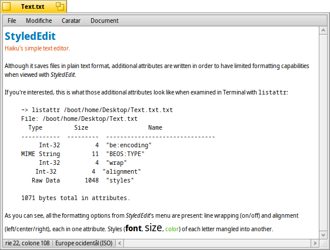

StyledEdit
StyledEdit
| Deskbar: | ||
| Posizion: | /boot/system/apps/StyledEdit | |
| Impostazions: | nissune |
StyledEdit al è l'editôr di test sempliç di Haiku. Aben che al salve i file intun formât di test sempliç, a vengin scrits atribûts adizionâi in mût di podê vê capacitâts di formatazion limitadis cuant che si viôt cun StyledEdit.
Se ti interesse, cussì al è ce mût che a parin chei atribûts adizionâi, cuant che si ju esamine tal Terminâl cun listattr:
~> listattr /boot/home/Desktop/test.txt
File: /boot/home/Desktop/test.txt
Type Size Name
----------- --------- -------------------------------
Int-32 4 "be:encoding"
MIME String 11 "BEOS:TYPE"
Int-32 4 "wrap"
Int-32 4 "alignment"
Raw Data 1048 "styles"
1071 bytes total in attributes.
Di ce che tu puedis viodi, dutis lis opzions di formatazion dal menù di StyledEdit a son presintis: line wrapping (on/off) e alignment (left/center/right), ognidun un atribût. I stîi (caratar, dimension, colôr) di ogni letare a vegnin trasformâts intun altri atribût.
Dut câs, e je une biele idee chê di vê la pussibilitât di butà jù test colorât in caratars e dimensions diviersis pûr restant un normâl file di test. Duncje un ReadMe.txt, par esempli, si pues lei intune shell su cualsisei plateforme e vê ancjemò un tic di stîl cuant che si lu viôt in Haiku cuntun dopli-clic.
Però doprâ StyledEdit al è cetant sempliç, o saltarìn di spiegâ ogni element banâl dal menù. Al baste scrivi jù il to test, selezionâ lis peraulis che tu desideris formatâ e aplicâ il caratar, dimension e colôr dal menù . Rie gnove automatiche e l'inlineâ dal menù a funzionin dome su dut il file.